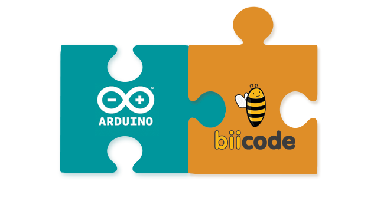
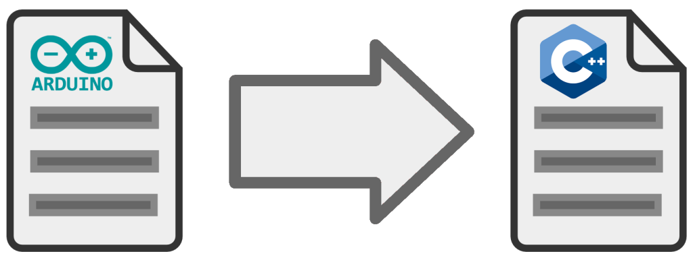
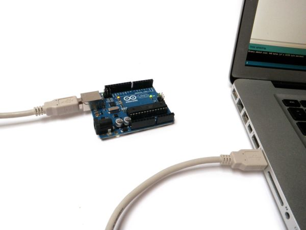

In this first example we going to see how to adapt an Arduino code from github to biicode in a simple way. Let’s go!

Create a biicode project and copy your code inside
First, create a new biicode project and a block.
1 2 3 4 5 6 7 8 9 10 11 | $ git clone https://github.com/br3ttb/Arduino-PID-Library.git ... $ cd Arduino-PID-Library/ $ bii init -L Successfully initialized biicode project $ bii work INFO: Processing changes... Work done! |
The following layout has been created:
1 2 3 4 5 6 7 8 9 10 11 12 13 14 | ├── bii ├── biicode.conf ├── PID_v1 │ ├── Examples │ │ ├── PID_AdaptiveTunings │ │ │ └── PID_AdaptiveTunings.ino │ │ ├── PID_Basic │ │ │ └── PID_Basic.ino │ │ └── PID_RelayOutput │ │ └── PID_RelayOutput.ino │ ├── keywords.txt │ ├── PID_v1.cpp │ └── PID_v1.h └── README.txt |
Make your code grow with all the power of C++

Change your .ino executables to .cpp and add #include “Arduino.h” at the top. To know which are executables or not, just see if the file has the loop() function inside it.
1 2 3 4 5 6 7 8 9 10 11 12 13 14 | ├── bii ├── biicode.conf ├── PID_v1 │ ├── Examples │ │ ├── PID_AdaptiveTunings │ │ │ └── PID_AdaptiveTunings.cpp │ │ ├── PID_Basic │ │ │ └── PID_Basic.cpp │ │ └── PID_RelayOutput │ │ └── PID_RelayOutput.cpp │ ├── keywords.txt │ ├── PID_v1.cpp │ └── PID_v1.h └── README.txt |
Now, check your unresolved dependencies. There are 3 unresolved dependencies of the file PID_v1.h, it is because the #include paths are relative.
1 2 3 4 5 6 7 8 9 10 11 12 13 14 15 16 17 18 19 20 21 | $ bii deps --detail david/Arduino-PID-Library depends on: david/Arduino-PID-Library (self) PID_v1/PID_v1.cpp PID_v1/PID_v1.h (I) PID_v1/PID_v1.h PID_v1/PID_v1.cpp (E) system: Arduino.h PID_v1/Examples/PID_AdaptiveTunings/PID_AdaptiveTunings.cpp PID_v1/Examples/PID_Basic/PID_Basic.cpp PID_v1/Examples/PID_RelayOutput/PID_RelayOutput.cpp PID_v1/PID_v1.cpp unresolved: PID_v1.h PID_v1/Examples/PID_AdaptiveTunings/PID_AdaptiveTunings.cpp PID_v1/Examples/PID_Basic/PID_Basic.cpp PID_v1/Examples/PID_RelayOutput/PID_RelayOutput.cpp WProgram.h PID_v1/PID_v1.cpp |
To solve it, just include the PID_v1.h path relative to your block, /PID_v1, in your biicode.conf. You can change the file’s #include from #include “PID_v1.h” to #include “david/Arduino-PID-Library/PID_v1/PID_v1.h”, but this change broke the compatibility with the Arduino IDE so we prefer touch the code as little as posible.
1 2 3 4 5 6 7 8 9 10 11 12 13 14 15 16 17 18 19 20 | # Biicode configuration file [requirements] [parent] [paths] /PID_v1 [dependencies] [mains] [tests] [hooks] [includes] [data] |
Check your deps again and see that the unresolved dependendencies to PID_v1/PID_v1.h have desapiered.
1 2 3 4 5 6 7 8 9 10 11 12 13 14 15 16 17 18 19 20 | $ bii deps --detail david/Arduino-PID-Library depends on: david/Arduino-PID-Library (self) PID_v1/PID_v1.cpp PID_v1/PID_v1.h (I) PID_v1/PID_v1.h PID_v1/Examples/PID_AdaptiveTunings/PID_AdaptiveTunings.cpp (E) PID_v1/Examples/PID_Basic/PID_Basic.cpp (E) PID_v1/Examples/PID_RelayOutput/PID_RelayOutput.cpp (E) PID_v1/PID_v1.cpp (E) system: Arduino.h PID_v1/Examples/PID_AdaptiveTunings/PID_AdaptiveTunings.cpp PID_v1/Examples/PID_Basic/PID_Basic.cpp PID_v1/Examples/PID_RelayOutput/PID_RelayOutput.cpp PID_v1/PID_v1.cpp unresolved: WProgram.h PID_v1/PID_v1.cpp |
Build and Upload your Code with biicode
Configure your project
Connect your Arduino and configure the project settings with the info of your Arduino SDK and your board name. If you need help with the name of your board write /o when biicode ask you for the board.
It’s important that you connect your Arduino first.

1 2 3 4 5 6 7 8 9 10 11 12 | $ bii arduino:settings Installed SDKs: [0.] version=1.0.6 path=/home/david/.biicode_env/arduino-1.0.6 [1.] version=1.5.8 path=/home/david/.biicode_env/arduino-1.5.8 [2.] version=1.6.0 path=/home/david/.biicode_env/arduino-1.6.0 Enter SDK number or type path (/home/david/.biicode_env/arduino-1.0.6): 2 Enter board (/o list supported options): mega2560 Using arduino port: /dev/ttyACM0 WARN: Arduino toolchain defined, regenerating project Creating toolchain for Arduino Run "bii cpp:configure -t arduino" to activate it Run "bii cpp:configure -t" to disable it |
Now. configure your project.
1 2 3 | $ bii configure -t arduino INFO: Processing changes... ... |
Build your code
Now, build your code as usual with biicode. Just execute bii build.
1 2 3 4 5 6 7 8 9 10 11 12 13 14 15 16 17 18 19 20 21 22 23 24 25 26 27 28 29 30 31 32 33 34 35 36 37 | $ bii build INFO: Processing changes... Building: "/home/david/.biicode/cmake-3.0.2-Linux-64/bin/cmake" --build . Scanning dependencies of target mega2560_CORE [ 3%] Building CXX object david/Arduino-PID-Library/CMakeFiles/mega2560_CORE.dir/home/david/.biicode_env/arduino-1.0.6/hardware/arduino/cores/arduino/WString.cpp.obj ... [ 92%] Building CXX object david/Arduino-PID-Library/CMakeFiles/david_Arduino-PID-Library_PID_v1_Examples_PID_AdaptiveTunings_PID_AdaptiveTunings.dir/PID_v1/Examples/PID_AdaptiveTunings/PID_AdaptiveTunings.cpp.obj Linking CXX executable /home/david/Escritorio/pid_arduino/bin/david_Arduino-PID-Library_PID_v1_Examples_PID_AdaptiveTunings_PID_AdaptiveTunings.elf Generating EEP image Generating HEX image Calculating image size Firmware Size: [Program: 5116 bytes (2.0%)] [Data: 104 bytes (1.3%)] on atmega2560 EEPROM Size: [Program: 0 bytes (0.0%)] [Data: 0 bytes (0.0%)] on atmega2560 [ 92%] Built target david_Arduino-PID-Library_PID_v1_Examples_PID_AdaptiveTunings_PID_AdaptiveTunings Scanning dependencies of target david_Arduino-PID-Library_PID_v1_Examples_PID_Basic_PID_Basic [ 96%] Building CXX object david/Arduino-PID-Library/CMakeFiles/david_Arduino-PID-Library_PID_v1_Examples_PID_Basic_PID_Basic.dir/PID_v1/Examples/PID_Basic/PID_Basic.cpp.obj Linking CXX executable /home/david/Escritorio/pid_arduino/bin/david_Arduino-PID-Library_PID_v1_Examples_PID_Basic_PID_Basic.elf Generating EEP image Generating HEX image Calculating image size Firmware Size: [Program: 4890 bytes (1.9%)] [Data: 80 bytes (1.0%)] on atmega2560 EEPROM Size: [Program: 0 bytes (0.0%)] [Data: 0 bytes (0.0%)] on atmega2560 [ 96%] Built target david_Arduino-PID-Library_PID_v1_Examples_PID_Basic_PID_Basic Scanning dependencies of target david_Arduino-PID-Library_PID_v1_Examples_PID_RelayOutput_PID_RelayOutput [100%] Building CXX object david/Arduino-PID-Library/CMakeFiles/david_Arduino-PID-Library_PID_v1_Examples_PID_RelayOutput_PID_RelayOutput.dir/PID_v1/Examples/PID_RelayOutput/PID_RelayOutput.cpp.obj Linking CXX executable /home/david/Escritorio/pid_arduino/bin/david_Arduino-PID-Library_PID_v1_Examples_PID_RelayOutput_PID_RelayOutput.elf Generating EEP image Generating HEX image Calculating image size Firmware Size: [Program: 4460 bytes (1.7%)] [Data: 86 bytes (1.0%)] on atmega2560 EEPROM Size: [Program: 0 bytes (0.0%)] [Data: 0 bytes (0.0%)] on atmega2560 [100%] Built target david_Arduino-PID-Library_PID_v1_Examples_PID_RelayOutput_PID_RelayOutput |
Upload your Arduino sketches
To upload your code in the Arduino just need to execute bii arduino:upload.
1 2 3 4 5 6 7 8 9 10 11 12 13 14 15 16 17 18 19 20 21 22 23 24 25 26 27 28 29 30 31 32 33 34 35 36 37 38 39 40 41 42 43 44 45 46 47 | $ bii arduino:upload INFO: Processing changes... Building: "/home/david/.biicode/cmake-3.0.2-Linux-64/bin/cmake" --build . [ 76%] Built target mega2560_CORE [ 80%] Built target mega2560_PID_v1 [ 88%] Built target david_Arduino-PID-Library [ 92%] Built target david_Arduino-PID-Library_PID_v1_Examples_PID_AdaptiveTunings_PID_AdaptiveTunings [ 96%] Built target david_Arduino-PID-Library_PID_v1_Examples_PID_Basic_PID_Basic [100%] Built target david_Arduino-PID-Library_PID_v1_Examples_PID_RelayOutput_PID_RelayOutput Using arduino port: /dev/ttyACM0 You have the following firmwares: david_Arduino-PID-Library_PID_v1_Examples_PID_AdaptiveTunings_PID_AdaptiveTunings david_Arduino-PID-Library_PID_v1_Examples_PID_Basic_PID_Basic david_Arduino-PID-Library_PID_v1_Examples_PID_RelayOutput_PID_RelayOutput Firmware name: PID_Basic Uploading... [sudo] password for david: [ 85%] Built target mega2560_CORE [ 89%] Built target mega2560_PID_v1 [ 96%] Built target david_Arduino-PID-Library [100%] Built target david_Arduino-PID-Library_PID_v1_Examples_PID_Basic_PID_Basic Scanning dependencies of target david_Arduino-PID-Library_PID_v1_Examples_PID_Basic_PID_Basic-upload avrdude: AVR device initialized and ready to accept instructions Reading | ################################################## | 100% 0.02s avrdude: Device signature = 0x1e9801 avrdude: reading input file "/tmp/Arduino-PID-Library/bin/david_Arduino-PID-Library_PID_v1_Examples_PID_Basic_PID_Basic.hex" avrdude: writing flash (4782 bytes): Writing | ################################################## | 100% 0.84s avrdude: 4782 bytes of flash written avrdude: reading input file "/tmp/Arduino-PID-Library/bin/david_Arduino-PID-Library_PID_v1_Examples_PID_Basic_PID_Basic.eep" avrdude: writing eeprom (0 bytes): Writing | ################################################## | 100% 0.00s avrdude: 0 bytes of eeprom written avrdude: safemode: Fuses OK (H:FF, E:D0, L:FF) avrdude done. Thank you. [100%] Built target david_Arduino-PID-Library_PID_v1_Examples_PID_Basic_PID_Basic-upload Upload finished |
We hope you liked this first example of many to come, feel free to comment below.
As you know, we’re available at our forum or Stackoverflow tag. You can also write us and request features at our roadmap.
Related Posts